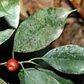
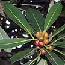
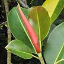
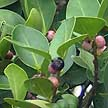
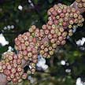

|
|
|
plants
text index | photo
index
|
|
 Waringin Ficus benjamina |
 Collared fig Ficus crassimea |
 India-rubber tree Ficus crassimea |
 Jejawi Ficus microcarpa |
 Common red stem-fig Ficus variegata |
| Large strangling fig. Seldom has aerial roots. Leaves (2-7cm) with sharp, long pointed tip, on thin, 'weeping' branches. Figs round (1cm) in pairs. Commonly seen even in urban areas, also on rocky coasts, but not in forests. | Strangling fig that can grow large. Leaves (15-20cm long). Figs (1.5-1.8cm wide) many. Rare. | Large strangling fig with many aerial roots. Leaves (7.5-25cm) , stipules large and bright red. Figs oval (1cm long) and ripen yellow. Common. | Strangling fig that can grow into enormous trees. With a curtain of slender aerial roots. Leaves (5-7cm), without pointed tips. Figs round (about 1cm). Common. | Not a strangler, can grow tall. Leaves heart-shaped with pointed tips (10-25cm). Figs in dense clusters on the trunk and main branches. Common. |
| Tall tree (to 20m). Compound leaf thin, made up of three leaflets. Flowers tiny white in a spray. Fruit capsule of three lobes, each with one large seed. Commonly seen in many areas. | Shrub to small tree (2-3m). Leaves are large (15-30cm), fleshy, leathery, dark green, glossy. Flowers white crowded on a spike under the leaves. Fruits oval with a pointed tip. Commonly seen on the forest path to Chek Jawa. |
|
|
||
|